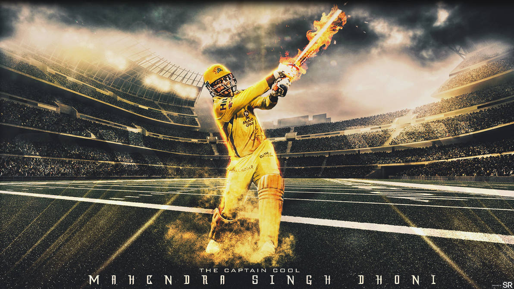

Mahendra Singh Dhoni ( born 7 July 1981) is an Indian professional cricketer who plays as a right-handed batter and a wicket-keeper. Widely regarded as one of the most prolific wicket-keeper batsmen and captains and one of the greatest ODI batsmen, he represented the Indian cricket team and was the captain of the side in limited overs formats from 2007 to 2017 and in test cricket from 2008 to 2014. Dhoni has captained the most international matches and is the most successful Indian captain. He has led India to victory in the 2007 ICC World Twenty20, the 2011 Cricket World Cup, and the 2013 ICC Champions Trophy, being the only captain to win three different limited overs ICC tournaments. He also led the teams that won the Asia Cup in 2010, 2016 and was a member of the title winning squad in 2018.
Born in Ranchi, Dhoni made his first class debut for Bihar in 1999. He made his debut for the Indian cricket team on 23 December 2004 in an ODI against Bangladesh and played his first test a year later against Sri Lanka. In 2007, he became the captain of the ODI side before taking over in all formats by 2008. Dhoni retired from test cricket in 2014 but continued playing in limited overs cricket till 2019. He has scored 17,266 runs in international cricket including 10,000 plus runs at an average of more than 50 in ODIs.
In the Indian Premier League (IPL), Dhoni plays for Chennai Super Kings (CSK), leading them to the final on ten occasions and winning it five times (2010, 2011, 2018, 2021 and 2023 ) jointly sharing this title with Rohit Sharma . He has also led CSK to two Champions League T20 titles in 2010 and 2014. Dhoni is among the few batsmen to have scored more than five thousand runs in the IPL, as well as being the first wicket-keeper to do so.
In 2008, Dhoni was awarded India's highest sport honour Major Dhyan Chand Khel Ratna Award by Government of India. He received the fourth highest civilian award Padma Shri in 2009 and third highest civilian award Padma Bhushan in 2018. Dhoni holds an honorary rank of Lieutenant colonel in the Parachute Regiment of the Indian Territorial Army which was presented to him by the Indian Army in 2011.
Mahendra Singh Dhoni, popularly known as MS Dhoni, is one of the most successful captains in the history of cricket. Under his leadership, India achieved remarkable success in all formats of the game. He led India to victory in all three major ICC tournaments: the ICC T20 World Cup in 2007, the ICC ODI World Cup in 2011, and the ICC Champions Trophy in 2013. This unique achievement makes him the only captain in cricket history to win all three ICC limited-overs tournaments. Dhoni also guided India to the top of the ICC Test rankings for the first time in 2009, winning the ICC Test Mace in 2008–2009 and again in 2016–2017. He captained India to three Border-Gavaskar Trophy wins against Australia in 2010–11, 2012–13 (where India whitewashed Australia 4–0), and 2014, becoming the only Indian captain to achieve such a feat. In regional competitions, he led India to Asia Cup victories in 2008 and 2010.
Apart from his international achievements, Dhoni also enjoyed immense success in the Indian Premier League (IPL). As captain of Chennai Super Kings (CSK), he won five IPL titles in 2010, 2011, 2018, 2021, and 2023. He also led CSK to two Champions League T20 titles in 2010 and 2014. Dhoni is widely respected not only for his calm leadership and tactical mind but also for his exceptional wicketkeeping skills and ability to finish matches under pressure. He is known for his famous last-ball six that sealed India's 2011 World Cup win. Over his career, he earned numerous honors, including the Padma Bhushan in 2018, Padma Shri in 2009, and the Rajiv Gandhi Khel Ratna Award in 2007. He also holds the honorary rank of Lieutenant Colonel in the Indian Territorial Army. Dhoni's contribution to Indian cricket has made him a legend and an inspiration for generations of cricketers.
MS Dhoni and Virat Kohli are two of the greatest cricketers and captains in Indian cricket history. Both have left a lasting legacy, but they are known for different styles of leadership and individual strengths. MS Dhoni is widely regarded as one of the most successful captains of all time. He led India to victory in all three ICC limited-over trophies: the T20 World Cup in 2007, the ODI World Cup in 2011, and the Champions Trophy in 2013. He also guided India to the No.1 position in the ICC Test rankings for the first time in 2009 and won the ICC Test Mace twice. Known for his calm and composed nature, Dhoni was famous for taking bold decisions under pressure and finishing matches with his bat in tight situations.
Virat Kohli, on the other hand, is known for his aggressive and passionate approach to the game. As a captain, he brought a new level of fitness and intensity to the team. Under his leadership, India dominated in Test cricket, winning a record number of matches overseas and maintaining the No.1 Test ranking for a long period. Although Kohli did not win an ICC trophy as captain, he led India to the final of the 2017 Champions Trophy and the semi-final of the 2019 ODI World Cup. Kohli is also one of the most consistent and prolific batsmen in cricket history, with over 70 international centuries. He is the fastest to reach many batting milestones and has played several match-winning innings across formats.
In the Indian Premier League (IPL), MS Dhoni captained Chennai Super Kings to five IPL titles and two Champions League T20 trophies. Virat Kohli, while being the long-time captain of Royal Challengers Bangalore, did not win any IPL title during his tenure, although he remains the highest run-scorer in the tournament’s history.
In summary, Dhoni is celebrated more for his successful captaincy, finishing skills, and tactical brilliance, while Kohli is admired for his aggressive leadership, batting consistency, and passion for the game. Both have contributed immensely to Indian cricket in their own unique ways and remain iconic figures in the sport.
üèÜ Achievements of MS Dhoni in IPL
MS Dhoni is one of the most successful and iconic captains in the history of the Indian Premier League (IPL).
He has led Chennai Super Kings (CSK) since the tournament’s beginning in 2008 and has built one of the most consistent and successful franchises in IPL history.
Under his leadership, CSK has won the IPL title five times—in 2010, 2011, 2018, 2021, and 2023.
His calm presence, smart captaincy, and ability to make strategic decisions under pressure have been key to CSK’s continued success over the years.
In addition to the IPL titles, Dhoni also led CSK to win the Champions League T20 (CLT20) twice, in 2010 and 2014, making the team a dominant force in international T20 club cricket.
He has taken CSK to the IPL playoffs more than 10 times and to the finals 10 times, a record for any team under a single captain.
His leadership has kept CSK competitive even after setbacks like the team’s two-year suspension and rebuilding phases.
As a player, Dhoni is one of the most successful wicketkeepers and finishers in the IPL.
He has scored over 5,000 runs in the league and is known for finishing games in high-pressure situations.
His quick glove work behind the stumps and smart field placements have made him a tactical genius in the T20 format.
Even in the final stages of his career, he remains a vital part of the CSK team and is admired for his fitness, leadership, and deep understanding of the game.
In summary, MS Dhoni's IPL achievements include five IPL titles, two CLT20 titles, multiple playoff appearances, and a legacy as one of the greatest captains in T20 cricket.
ü•á IPL Titles Won
Year
Achievements
2010
üèÜIPL Champion
2011
üèÜIPL Champion
2018
üèÜIPL Champion
2021
üèÜIPL Champion
2023
üèÜIPL Champion
Chennai Super Kings (CSK) is an Indian professional T20 cricket franchise based in Chennai, Tamil Nadu. The team competes in the Indian Premier League (IPL) and was one of the eight franchises incorporated when the league was established in 2008. The team plays its home matches at the M. A. Chidambaram Stadium and is owned by Chennai Super Kings Cricket.
The Super Kings is the joint-most successful IPL franchise (along with Mumbai Indians), having won five IPL titles. It has also appeared in ten finals and qualified for the playoff stages 12 times, the most amongst the IPL teams. The franchise has also won the Champions League Twenty20 twice in 2010 and 2014. The team is currently captained by M S Dhoni and coached by Stephen Fleming.
The Super Kings was suspended for two years from the IPL from July 2015 to 2017 due to the involvement of its owners in the 2013 IPL betting case. The franchise re-joined the tournament for the 2018 season and won the title in its comeback season. In January 2022, CSK became India's first unicorn sports enterprise. As of 2022, it was the second most valuable IPL franchise with a valuation of $1.15 billion.

"The process is more important than the results. And if you take care of the process, you will get the results.